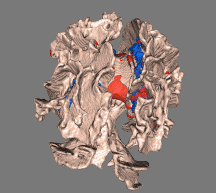

Contents
- Introduction
- User Guide
- FAQ
- Further Information
Research Overview - Tract-Based Spatial Statistics
There is much recent interest in using magnetic resonance diffusion imaging to provide information about anatomical connectivity in the brain, by measuring the anisotropic diffusion of water in white matter tracts. One of the measures most commonly derived from diffusion data is fractional anisotropy (FA), which quantifies how strongly directional the local tract structure is. Many imaging studies are starting to use FA images in voxelwise statistical analyses, in order to localise brain changes related to development, degeneration and disease. However, optimal analysis is compromised by the use of standard registration algorithms; there has not been a satisfactory solution to the question of how to align FA images from multiple subjects in a way that allows for valid conclusions to be drawn from the subsequent voxelwise analysis. Furthermore, the arbitrariness of the choice of spatial smoothing extent has not been resolved. TBSS aims to solve these issues via a) carefully tuned nonlinear registration, followed by b) projection onto an alignment-invariant tract representation (the "mean FA skeleton"). TBSS aims to improve the sensitivity, objectivity and interpretability of analysis of multi-subject diffusion imaging studies.
Referencing
If you use TBSS in your research, please make sure that you reference at least the first of the articles listed below, and ideally the complete list. For your convenience, we provide example text (short and more detailed versions), which you are welcome to use in your methods description.
Brief summary text: "Voxelwise statistical analysis of the FA data was carried out using TBSS (Tract-Based Spatial Statistics, [Smith 2006]), part of FSL [Smith 2004]. TBSS projects all subjects' FA data onto a mean FA tract skeleton, before applying voxelwise cross-subject statistics."
More detailed summary text: "Voxelwise statistical analysis of the FA data was carried out using TBSS (Tract-Based Spatial Statistics, [Smith 2006]), part of FSL [Smith 2004]. First, FA images were created by fitting a tensor model to the raw diffusion data using FDT, and then brain-extracted using BET [Smith 2002]. All subjects' FA data were then aligned into a common space using the nonlinear registration tool FNIRT [Andersson 2007a, 2007b], which uses a b-spline representation of the registration warp field [Rueckert 1999]. Next, the mean FA image was created and thinned to create a mean FA skeleton which represents the centres of all tracts common to the group. Each subject's aligned FA data was then projected onto this skeleton and the resulting data fed into voxelwise cross-subject statistics."
[Smith 2006] S.M. Smith, M. Jenkinson, H. Johansen-Berg, D. Rueckert, T.E. Nichols, C.E. Mackay, K.E. Watkins, O. Ciccarelli, M.Z. Cader, P.M. Matthews, and T.E.J. Behrens. Tract-based spatial statistics: Voxelwise analysis of multi-subject diffusion data. NeuroImage, 31:1487-1505, 2006.
[Smith 2004] S.M. Smith, M. Jenkinson, M.W. Woolrich, C.F. Beckmann, T.E.J. Behrens, H. Johansen-Berg, P.R. Bannister, M. De Luca, I. Drobnjak, D.E. Flitney, R. Niazy, J. Saunders, J. Vickers, Y. Zhang, N. De Stefano, J.M. Brady, and P.M. Matthews. Advances in functional and structural MR image analysis and implementation as FSL. NeuroImage, 23(S1):208-219, 2004.
[Smith 2002] S.M. Smith. Fast robust automated brain extraction. Human Brain Mapping, 17(3):143-155, November 2002.
[Andersson 2007a] J.L.R. Andersson, M. Jenkinson and S. Smith. Non-linear optimisation. FMRIB technical report TR07JA1 from www.fmrib.ox.ac.uk/analysis/techrep
[Andersson 2007b] J.L.R. Andersson, M. Jenkinson and S. Smith. Non-linear registration, aka Spatial normalisation FMRIB technical report TR07JA2 from www.fmrib.ox.ac.uk/analysis/techrep
[Rueckert 1999] D. Rueckert, L. I. Sonoda, C. Hayes, D. L. G. Hill, M. O. Leach, and D. J. Hawkes. Non-rigid registration using free-form deformations: Application to breast MR images. IEEE Transactions on Medical Imaging, 18(8):712-721, 1999.